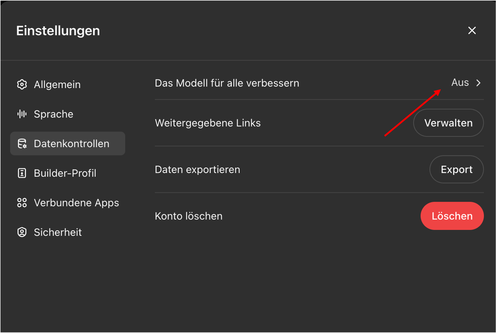

Möglichkeiten und Grenzen
12 November, 2025
Rechtliche Aspekte
Zwei wichtige Aspekte, welche bei der Benutzung von LLMs beachtet werden müssen:
Rechtliche Aspekte
- Wer besitzt die Rechte an den von LLMs generierten Inhalten?
- Risiko von Plagiaten und Urheberrechtsverletzungen
- Richtlinien für den Umgang mit generierten Inhalten
Datenschutz
- Schutz personenbezogener Daten
- Einhaltung von Datenschutzbestimmungen
Rechtliche Aspekte
KI-Modelle können mit Inhalten trainiert sein, an denen Dritte Urheberrechte haben—dies kann bei der Verwendung der Modelle zu Urheberrechtsverletzungen führen.
Der Input (Prompt) kann geschützte Inhalte Dritter enthalten, deren Nutzung ohne rechtliche Grundlage Urheberrechte verletzt.
Der von der KI generierte Output kann zufällig geschützte Inhalte Dritter enthalten.
Rechtliche Aspekte
Anbieter von KI-Plattformen können sich Rechte an generierten Inhalten vorbehalten, was ebenfalls rechtliche Herausforderungen mit sich bringen kann.
OpenAI-Nutzungsbedingungen: die Rechte an generierten Inhalten abgetreten, OpenAI behält sich aber Nutzungsrechte vor.
Nutzende sind in der Verantwortung, die rechtlichen Anforderungen einzuhalten.
Empfehlung
KI-Policy: Geben Sie deutlich an, dass der Inhalt von einer KI erstellt wurde, sodass kein Nutzer dies übersehen oder missverstehen kann:
Deklaration
Der/die Autor*in hat diesen Text teilweise mit [Modell] erstellt. Nach der Erstellung des Entwurfs hat der/die Autor*in den Text überprüft, bearbeitet und nach eigenem Ermessen angepasst und übernimmt die volle Verantwortung für den Inhalt dieser Veröffentlichung.
Zitieren Sie das verwendete Modell in ähnlicher Weise, wie Sie Software zitieren würden.
Datenschutz
Datenschutz allgemein bedeutet:
sicherzustellen, dass keine persönlichen Daten der Lehrenden oder Lernenden ohne deren Zustimmung gesammelt, gespeichert oder weiterverarbeitet werden, um ihre Privatsphäre und Sicherheit zu gewährleisten.
Transparenz darüber, welche Daten erhoben und wie sie verwendet werden.
sicherzustellen, dass Daten nicht für andere Zwecke als die ursprünglich angegebenen verwendet werden
Recht der Betroffenen auf Auskunft, Berichtigung, Löschung und Widerspruch
Einhaltung von Datenschutzgesetzen und -vorschriften
Lehrpersonen müssen Datenschutz beim Einsatz von (digitalen) Tools immer beachten.
Datensicherheit
Dies bedeutet:
- Daten so zu speichern, dass sie nicht verloren gehen
- Daten nicht manipuliert werden können
- Technische und organisatorische Massnahmen zum Schutz vor unbefugtem Zugriff auf Daten
Schutzmassnahmen
Keine persönlichen Daten in die Eingabe von ChatGPT einfliessen lassen (nur anonymisierte Informationen)
Keine Eingabe von sensiblen oder vertraulichen Informationen (Informationen über gesundheitliche, finanzielle oder private Angelegenheiten)
Einstellungen im Konto für Datenkontrolle:

Copilot verwenden
Microsoft Copilot garantiert BFH-Mitarbeitenden, dass Benutzerdaten gesichert sind:
- Benutzerdaten sind durch Verschlüsselung, Sicherheitskontrollen und Datenisolation (gleich wie bei E-Mails in Exchange und Dateien in SharePoint) geschützt.
- Microsoft verwendet Daten nicht ohne Anweisung des Benutzers.

API oder lokale KI-Modelle verwenden
- jan.ai: Eine Open-Source ChatGPT-Alternative
- lmstudio.ai: Lokale LLMs installieren
Detektion von KI-generiertem Inhalt
Heuristiken:
Durch Verwendung spezifischer Vokabeln und Phrasen: “delve”, “vibrant”, “embark”, “it’s important to note”, “based on the data provided”.
Durch Verwendung des in der Schweiz unüblichen scharfen S (ß).
Detektion anhand vom Schreibstil und Inhalt:
Erkennungswerkzeuge sind nicht sehr nützlich und können leicht umgangen werden.
Erkennungs-Illusion: Lehrkräfte überschätzen ihre Erkennungsfähigkeiten (Fleckenstein et al. 2024).
Fragen
?
References

Berner Fachhochschule | Bern University of Applied Sciences